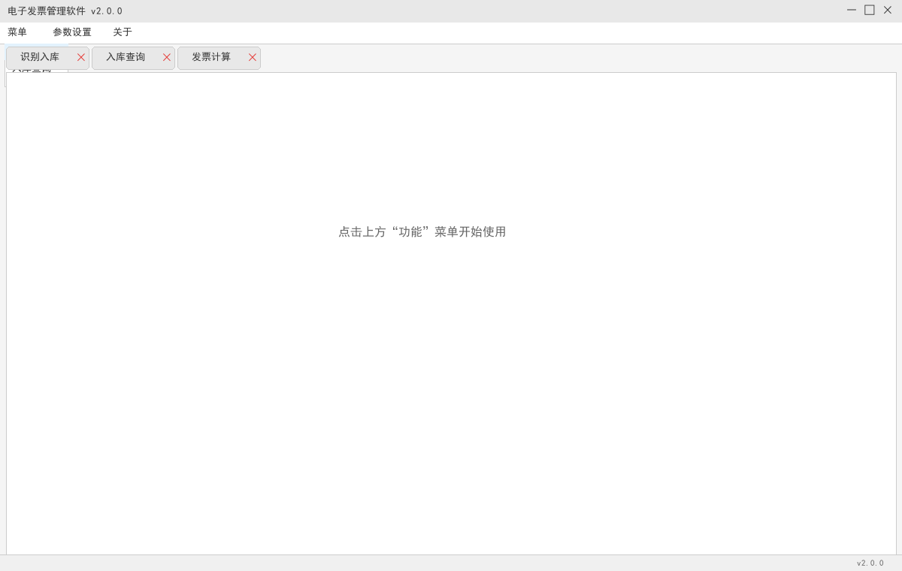
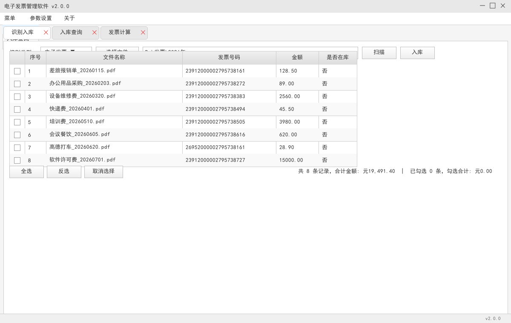
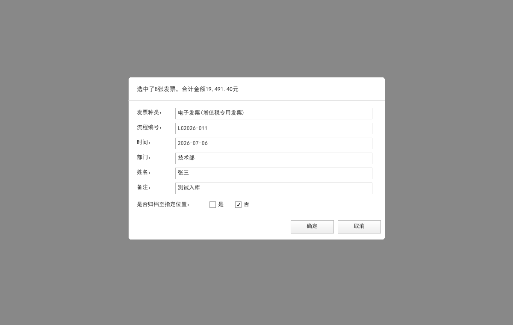
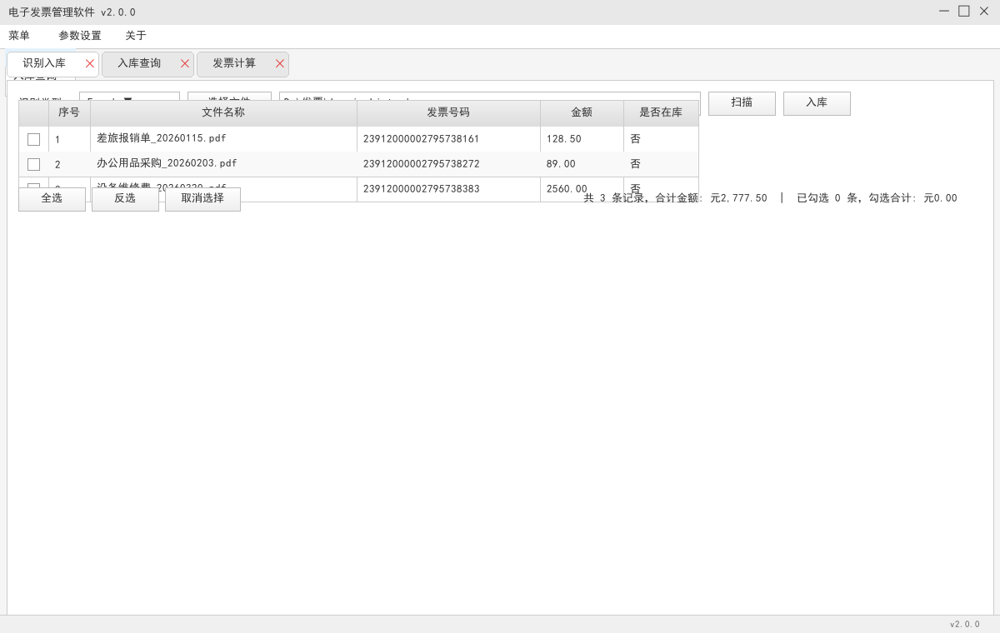
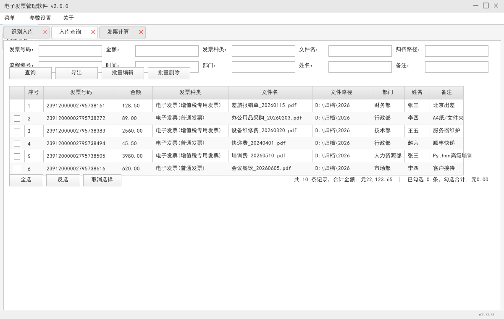
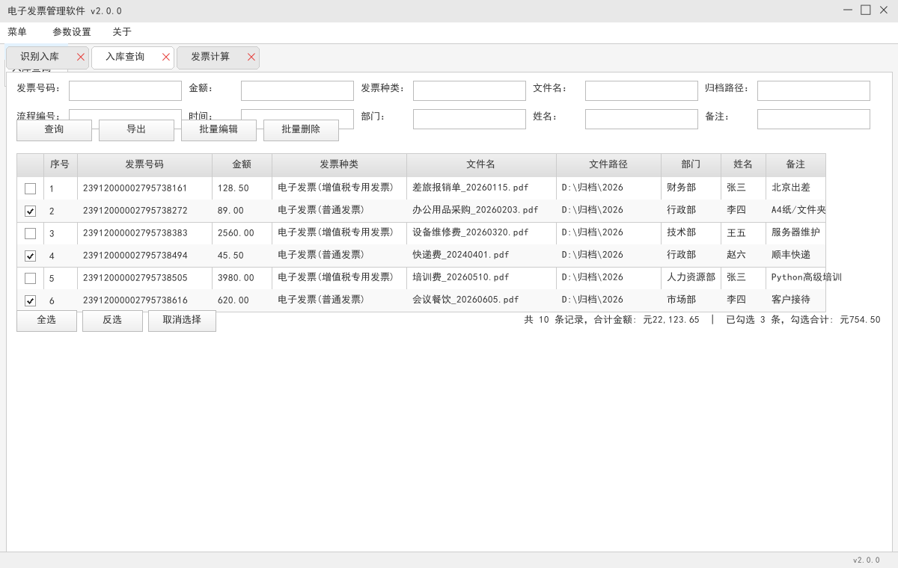
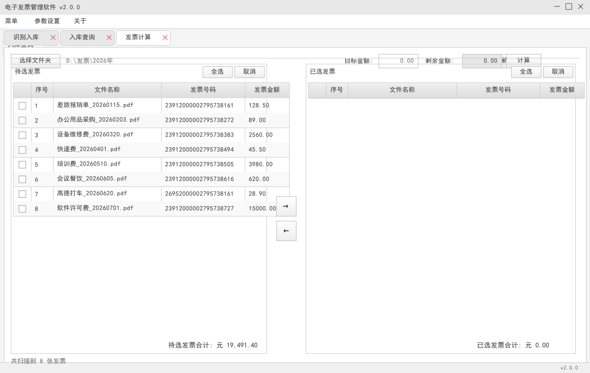
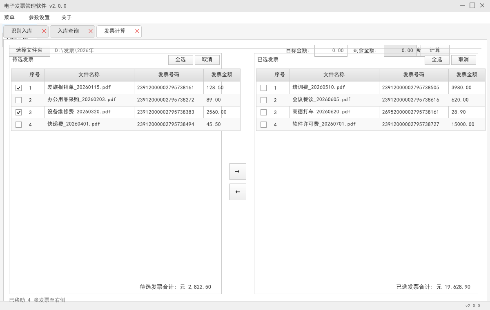
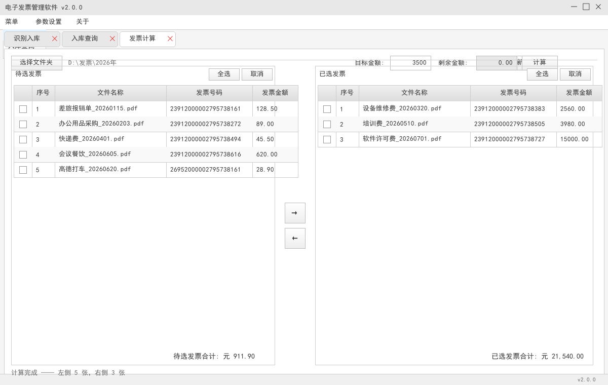

InvoiceManager 电子发票管理软件
用户操作手册
软件名称：InvoiceManager 电子发票管理软件
主要功能：电子发票（PDF）识别入库、已入库记录查询与批量管理、发票金额智能计算。支持常规文字型 PDF，也支持机票行程单等图片型 PDF 的 OCR 识别。
适用对象：财务人员、行政人员及需要批量管理电子发票的办公用户。
一、系统要求与启动
| 项目 | 说明 |
|---|
| 操作系统 | Windows 7 及以上（64 位推荐） |
| 运行环境 | 已打包为 InvoiceManager.exe，双击即可运行 |
| 依赖文件 | 数据库文件 InvoiceManager.db 会自动生成在程序同级目录 |
| 推荐分辨率 | 1280 × 800 及以上 |
二、主界面说明
启动软件后，主界面如下图所示。顶部为标题栏和菜单栏，菜单栏中仅有一个“功能”菜单，包含三个功能入口：
- 识别入库：扫描 PDF/Excel 发票文件，识别发票号码与金额并入库。对图片型 PDF（如机票行程单）会自动调用 OCR 引擎识别。
- 入库查询：查询、编辑、删除、导出已入库的发票记录。
- 发票计算：按目标金额智能挑选发票，用于报销凑单等场景。
图 1：软件主界面
首次打开时，界面会显示三个可关闭的标签页入口，点击“功能”菜单即可打开对应页面。

三、识别入库
“识别入库”用于将零散的发票文件批量识别并写入数据库。支持两种识别类型：
- 电子发票：选择存放 PDF 发票的文件夹，程序自动递归扫描所有 PDF。
- Excel：选择包含“发票号码”和“金额”列的 Excel 文件。
步骤 1：选择识别类型和文件/文件夹
图 2：选择识别类型与路径
在“识别类型”下拉框中选择“电子发票”，点击“选择文件”按钮选择发票所在文件夹；或在路径输入框中直接粘贴文件夹路径。

步骤 2：扫描发票
图 3：扫描结果展示
点击“扫描”按钮后，表格会列出文件夹中所有 PDF 发票的文件名称、识别出的发票号码、金额及是否在库状态。
- 若发票号码无法识别，表格中显示“（未识别）”。
- “是否在库”为“是”表示该发票号码已存在于数据库中，重复入库会被过滤。
步骤 3：勾选需要入库的记录
图 4：勾选记录
点击每行前面的复选框进行选择，也可使用底部工具栏的“全选”“反选”“取消选择”快速操作。工具栏会实时显示勾选数量与勾选金额合计。
提示：表格支持点击表头排序。排序后勾选的记录不会错乱，勾选状态会跟随原始数据行。
步骤 4：确认入库
图 5：填写入库信息
点击“入库”按钮，弹出“入库确认”对话框。填写发票种类、流程编号、时间、部门、姓名、备注等字段。PDF 模式下可选择是否将原文件归档到指定文件夹。

注意：只有“是否在库”为“否”的记录才会被真正入库；已入库记录会被自动跳过并提示。
步骤 5：Excel 模式入库（可选）
图 6：Excel 识别模式
在“识别类型”中选择“Excel”，点击“选择文件”选择 Excel 文件，再点击“扫描”即可读取表格中的发票数据。Excel 模式不涉及文件归档。

四、入库查询
“入库查询”用于查看、管理和导出已入库的发票记录。打开页面时会默认加载全部记录。
步骤 1：设置查询条件
图 7：查询结果
在顶部十个查询条件框中输入关键词（支持模糊查询），留空表示不限制该字段。点击“查询”按钮刷新表格。

提示：常用查询条件包括发票号码、文件名、部门、姓名等，多个条件同时填写时会取“并且”关系。
步骤 2：勾选目标记录
图 8：全选与批量操作
使用复选框或底部工具栏勾选需要操作的记录。工具栏会显示当前勾选数量与勾选金额合计。

步骤 3：批量编辑
图 9：批量编辑对话框
勾选记录后点击“批量编辑”，在弹窗中填写需要统一修改的字段，留空表示不修改。支持修改：发票种类、流程编号、时间、部门、姓名、备注。
步骤 4：批量删除
删除记录
勾选记录后点击“批量删除”，在确认提示中点击“是”即可删除。删除后数据不可恢复，请谨慎操作。
步骤 5：导出 Excel
导出查询结果
点击“导出”按钮，选择保存路径，即可将当前表格中的记录导出为 .xlsx 文件。导出的列与查询表格保持一致。
五、发票计算
“发票计算”用于从一批发票中挑选出总额最接近且不小于目标金额的发票组合，常用于报销凑单。
步骤 1：选择发票文件夹
图 10：扫描发票文件夹
点击“选择文件夹”按钮，选择存放 PDF 发票的目录。程序会自动递归扫描，识别出的发票会显示在左侧“待选发票”表格中。

提示：若修改了文件夹内容，可点击“刷新”按钮重新扫描。
步骤 2：将发票移动到已选区域
图 11：勾选并移动发票
在左侧“待选发票”表格中勾选需要的发票，点击中间“→”按钮移动到右侧“已选发票”区域；如需退回，在右侧勾选后点击“←”按钮。

步骤 3：输入目标金额并自动计算
图 12：输入目标金额计算
在“目标金额”输入框中填写需要凑单的金额（如 3500），点击“计算”按钮。程序会使用贪心算法从所有发票中挑选最少数量的发票，使合计金额大于等于目标金额，并自动将结果移动到右侧。

注意：若所有发票总额小于目标金额，程序会将全部发票移动到右侧并弹出提示。
六、常见问题
| 问题 | 解决方法 |
|---|
| 扫描后发票号码显示“（未识别）” | 检查 PDF 是否为正常电子发票；目前支持常见全电发票版式以及机票行程单等图片型 PDF（会自动 OCR）。如仍为图片型 PDF 识别失败，请确认 tesseract 目录及中文语言包 chi_sim.traineddata 存在。 |
| Excel 扫描无结果 | 确认 Excel 中包含“发票号码”和“金额”两列，且列名完全匹配。 |
| 入库时提示“已在库” | 该发票号码已存在于数据库，无需重复入库。 |
| 表格列宽不合适 | 所有菜单表格均支持自适应内容宽度，加载数据后会自动调整，也可手动拖动列边框。 |
| 软件闪退 | 避免在多线程扫描过程中频繁操作界面；如仍有问题，请检查 PDF 文件是否损坏。 |
七、数据与备份
- 数据库文件
InvoiceManager.db 位于程序同级目录，建议定期备份。
- 归档功能仅对 PDF 模式有效，启用后原文件会被移动到指定归档目录。
- 导出的 Excel 文件可用于与其他系统对接或离线存档。